IELTS Maestro, Complete AI IELTS Band Score Coach in Your Pocket.
Prepare for both IELTS Academic and IELTS General Training with real-time AI scoring engineered around official IELTS assessment criteria.
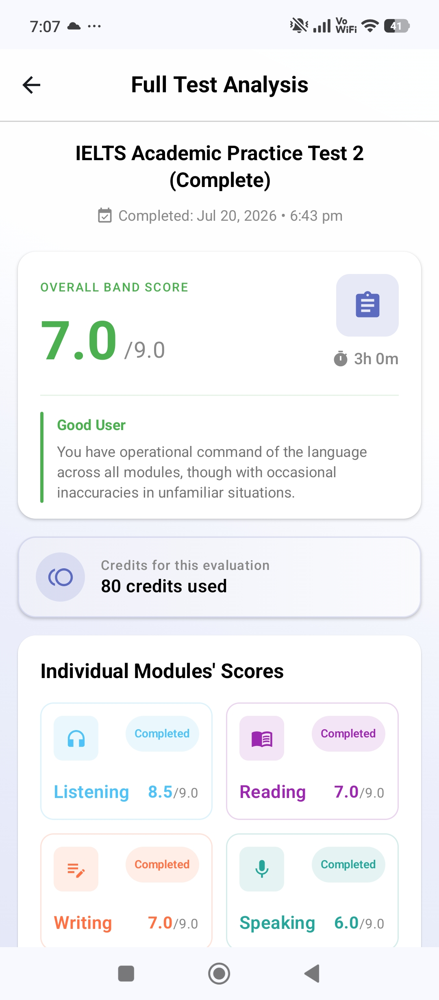
Practice that behaves like the exam, so exam day feels like practice.
IELTS Maestro isn't a flashcard app. Every test mirrors the real thing in format and timing, and every score is built on the criteria examiners actually use, reviewed with experienced IELTS teachers.
Real conditions
Full-length, fully timed sections, audio you hear only once, and the exact question formats from the real exam, Academic and General Training.
Real criteria
Writing and Speaking are assessed across the four official band descriptors, the same dimensions examiners weigh, with a band estimate and specific fixes.
Real guidance
The tests and the feedback are reviewed with experienced IELTS teachers, so what you practise reflects what actually moves your band score.
Practise every part of the exam.
Full timed tests in every module, structured exactly like the real thing, and the library keeps growing, with new tests added regularly. Take them one at a time, or sit a complete test end to end.
Listening
Four sections with authentic audio, played once, just like exam conditions.
Reading
Three long passages from books, journals and newspapers with 40 questions.
Writing
Task 1 data description and a Task 2 essay, both scored on the band criteria.
Speaking
Three parts, interview, long turn and discussion, recorded and scored.
Prefer the full experience? A complete test covers all four modules in about 2h 45m for 80 credits.
Built to move your band score, not just fill time.
Tell it your goal, and practice reshapes around you.
Pick Academic or General Training, your current level, the band you're aiming for and the date you sit the test. Everything after that is measured against that target.
- ✓ Target bands from 5.0 to 9.0
- ✓ Test date countdown built in
- ✓ Change your goal any time from your profile
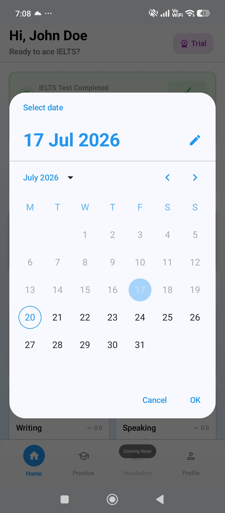
Practice that behaves like the real exam.
Timed sections, a running clock, authentic question formats and audio you hear only once. Sitting the real test should feel like something you've already done.
- ✓ Section-by-section timers
- ✓ Note completion, matching, multiple choice and more
- ✓ Difficulty labelled Easy, Medium or Hard
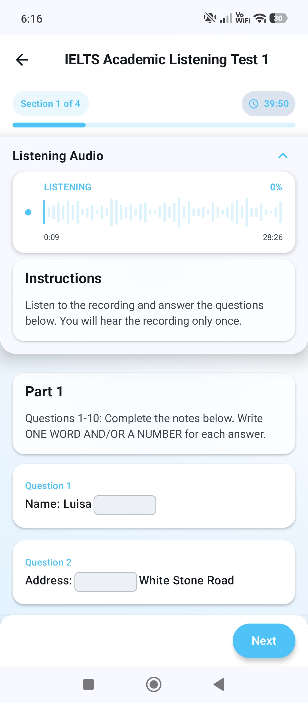
The full three-part speaking test, recorded in the app.
Interview, long turn and discussion, the same structure and timing as the real exam. You record each answer, and AI scores it against the criteria that actually decide your band: examiner-grade feedback in seconds, not weeks.
- ✓ Fluency, vocabulary, grammar and pronunciation
- ✓ Full three-part format with prep time
- ✓ Retake any part as often as you like
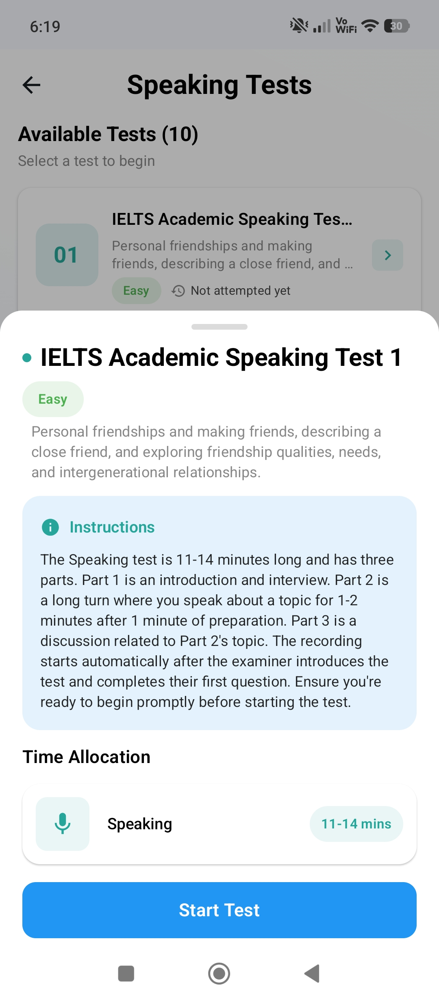
Both writing tasks, under exam timing.
Task 1 data description and a Task 2 essay in 60 minutes, exactly as the exam sets them. Each submission comes back with a band-referenced breakdown across the four official writing criteria, clear strengths, and the exact fixes that raise your score.
- ✓ Task 1 from 150 words, Task 2 from 250
- ✓ Feedback tied to the four writing criteria
- ✓ Specific rewrites, not vague advice
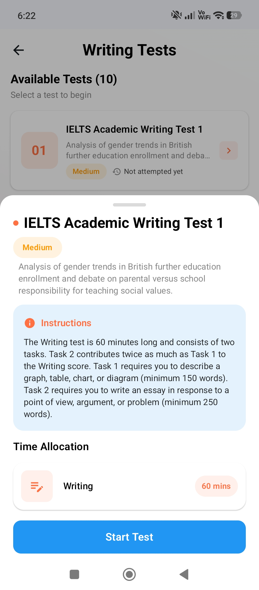
Your whole prep, at a glance.
A personal dashboard keeps your current band, your target and your per-skill progress in one place, so you always know what's working and what to practise next.
- ✓ Your current band next to your target
- ✓ Per-skill trend across all four modules
- ✓ Credit balance and reset date always in view
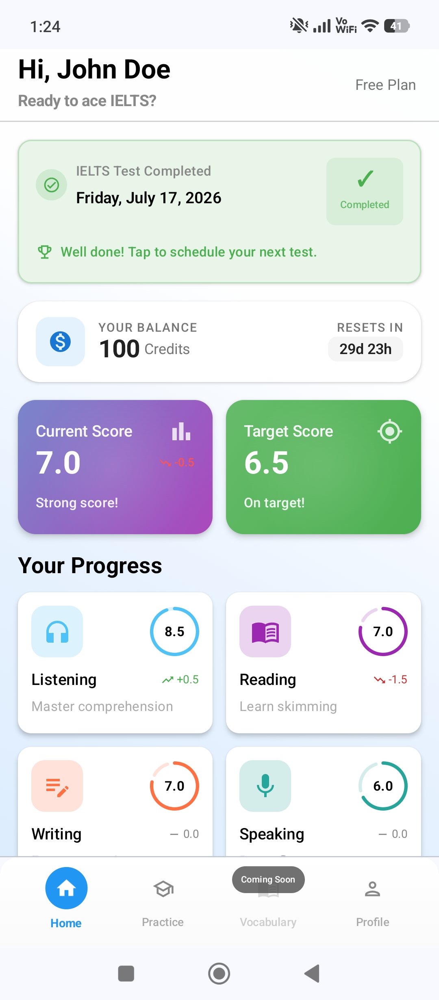
A look inside IELTS Maestro.
From your first scored test to a plan built around your test date, here's what practice looks like.
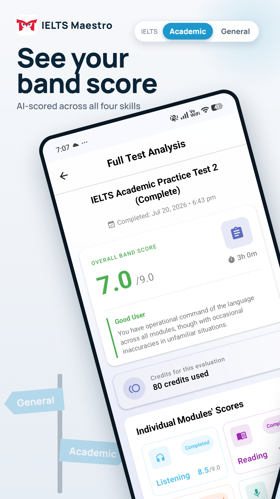
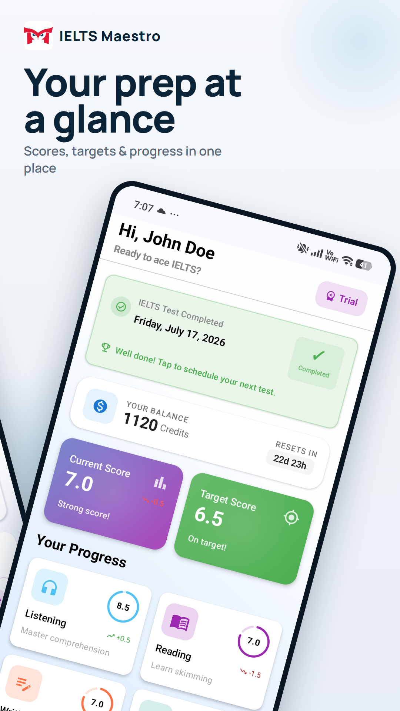
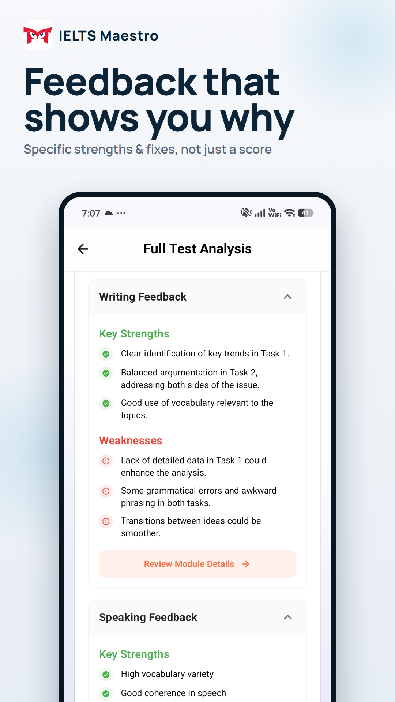
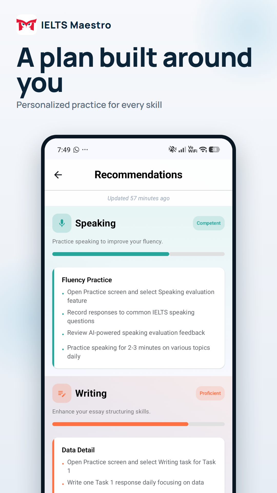
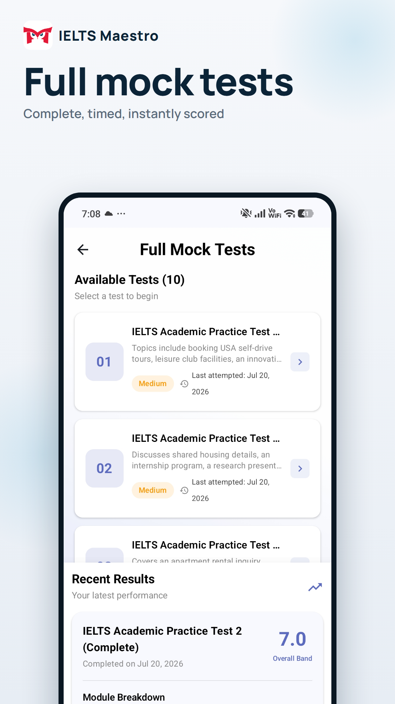
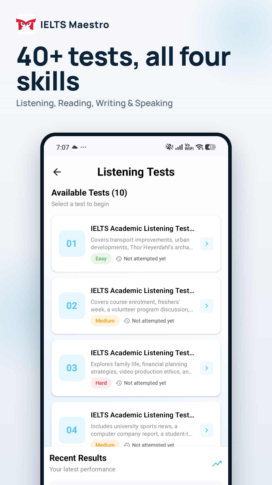
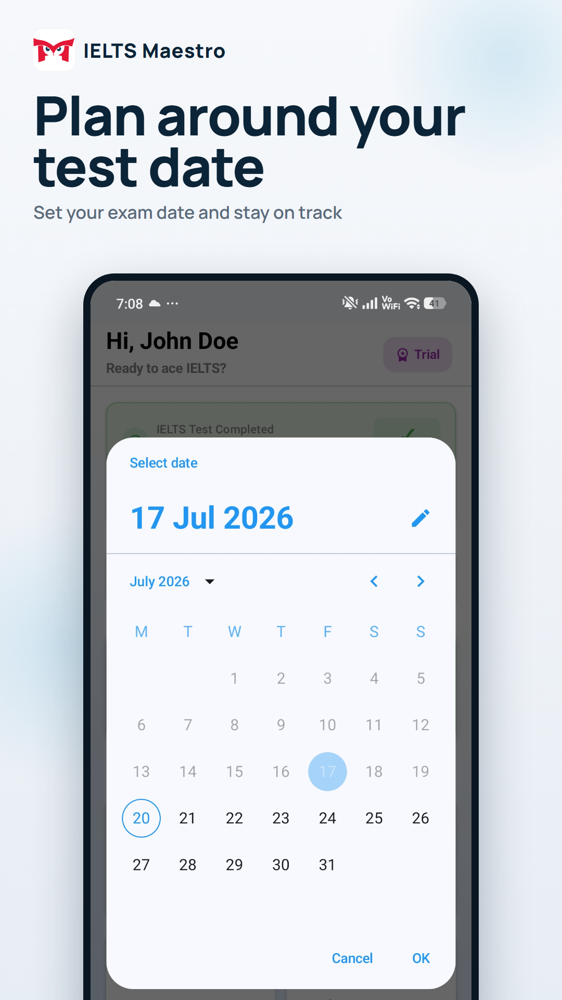
Swipe to explore →
From install to your first scored test in minutes.
Set your target
Choose your test type, current level, target band and test date. Setup takes about a minute.
Sit a practice test
Pick a module or a full test and work through it under real exam timing.
Act on the feedback
See where your band sits, what cost you marks, and exactly what to practise next.
7 days free, 250 credits to try everything.
Start your 7-day free trial with 250 credits across Listening, Reading, Writing and Speaking. A card is required to start, so your paid plan kicks in automatically when the trial ends. Cancel any time during the 7 days to stay on the Free plan with 100 credits every month.
Card required to start Cancel any time in 7 days Academic & General Training
That's enough for roughly any one of these: